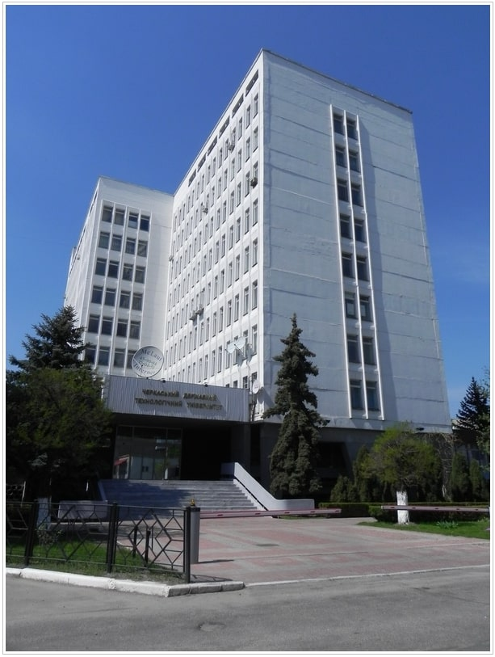

Біографія
Привіт, мене звати Андрій, 42 роки, живу в місті Черкаси.
Раніше працював системним
адміністратором.
Вирішив підняти свій рівень кваліфікації та займатися програмуванням.
Освіта
В 2006 році закінчів технологічний університет нашого міста ЧДТУ, факультет ФІТІС за спеціальністю ПЗ (програмне забезпечення).
Захоплення
Колись займався плаванням, люблю читати книжки, а ще сильніше подобається дивитися фільми:
світову класику, арт-хаус, авторське та фестивальне кіно (тобто мейнстрім і попсу не
пропонувати).
Viva la cinema!